기계정비산업기사 (2013-08-18 기출문제)
1과목: 공유압 및 자동화시스템
1. 건설기계 중 굴삭기는 붐 실린더나 버킷 실린더가 정지된 상태에서 굴삭기가 회전하는 경우가 있다. 4/3-WAY밸브를 사용한다면 중간 정지가 가능한 중립위치의 형식은?
- 펌프 클로즈드 센터형(pump closed center type)
- 오픈 센터형(open center type)
- 클로즈드 센터형(closed center type)
- 오픈 탠덤 센터형(open tendem center type)
(정답률: 70%)

2. 공기압 기기 중 서비스 유닛에 있는 압력 조절기에 대한 설명으로 맞는 것은?
- 압력조절기는 방향전환 밸브의 일종이다.
- 일정압력 이상이 되어야 순차적으로 동작되는 밸브이다.
- 높은 압력의 1차측 압력을 2차측에서 설장압에 맞게 일정한 저압으로 조절한다.
- 설정 압력 보다 낮은 압력이 1차측에 공급되면 설정압력이 출력된다.
(정답률: 72%)
3. 로킹 히로는 액추에이터 작동 중에 임의의 위치에 정지 또는 최종단계에 로크(Lock)시켜 놓은 회로이다. 다음 그림의 로킹을 위하여 사용한 밸브는?
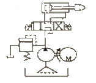
- 올 포트 블록형 변환밸브
- 텐덤 센터형 변환밸브
- PB 포트 블록형 변환밸브
- 파일럿 조작 체크밸브
(정답률: 65%)
4. 공압에서 사용되는 압축공기에는 오염된 물질이 혼입되는 경우가 있다. 시스템 외부에서 혼입되는 오염물질로 볼 수 없는 것은?
- 먼지(분진, 매연, 모래먼지 등)
- 유해 가스(황화수소, 아황산가스 등)
- 파이프의 부식물(필터의 부스러기, 마모분 등)
- 유해 물질(습기, 염분 등)
(정답률: 79%)
5. 다음 그림의 회로 명칭으로 맞는 것은?
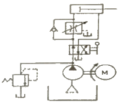
- 미터 – 아웃 회로
- 미터 – 인 회로
- 블리드 – 아웃 회로
- 블리드 – 인 회로
(정답률: 78%)
6. 공기압축기의 설치조건으로 적합하지 않은 것은?
- 지반이 견고한 장소에 설치하여 소음, 진동을 예방한다.
- 고온, 다습한 장소에 설치하여 드레인 발생을 많게 한다.
- 빗물, 바람, 직사광선 등에 보호될 수 있도록 한다.
- 예방정비가 가능하도록 충분한 공간을 확보한다.
(정답률: 92%)
7. 실린더에 적용된 사양이 다음과 같을 때 실린더의 전진추력은 얼마인가? (단, 피스톤 직경 10cm, 공급 압력 1000 kPa, 로드 직경 2cm 이며, 배압은 작용하지 않는다.)
- 250 π [N]
- 500 π [N]
- 2500 π [N]
- 5000 π [N]
(정답률: 67%)
8. 다음 회로도의 명칭으로 가장 적합한 것은?
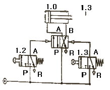
- 단동실린더 전진회로
- 복동실린더 자동복귀회로
- 미터인회로
- 차동회로
(정답률: 72%)
9. 다음 중 유압 실린더의 호칭법에 속하지 않는 것은?
- 지지형식의 기호
- 로드 무게
- 최고사용압력
- 행정길이
(정답률: 78%)
10. 유압 구동기구의 제어 밸브가 아닌 것은?
- 방향 제어 밸브
- 회로 지시 밸브
- 유량 제어 밸브
- 압력 제어 밸브
(정답률: 82%)
11. 직류전동기가 회전 시 소음이 발생하는 원인으로 틀린 것은?
- 정류자 면의 높이 불균일
- 정류자 면의 거칠음
- 전동기의 무부하 운전
- 축받이의 불량
(정답률: 83%)
12. 저항 변화형 센서가 아닌 것은?
- 스트레인 게이지
- 리드 스위치
- 서미스터
- 포텐쇼미터
(정답률: 57%)
13. 전동기 구동동력이 부족할 때 발생하는 현상은?
- 실린더 추력이 감소된다.
- 작동유가 과열된다.
- 토출유량이 많아진다.
- 유압유의 점도가 높아진다.
(정답률: 82%)
14. 다음의 기호가 나타내는 것은?
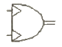
- 요동형 공기압 액추에이터
- 요동형 공기압 펌프
- 요동형 유압 모터
- 요동형 공기압 압축기
(정답률: 69%)
15. 제어계 중 시간과 관계된 신호에 의해서만 제어가 행해지는 것은?
- 동기 제어
- 비동기 제어
- 위치종속 시퀀스 제어
- 논리 제어
(정답률: 70%)
16. 공압 회전 액추에이터 중 피스톤형 요동 액추에이터에 속하지 않는 것은?
- 래크와 피니언형
- 스크류형
- 베인형
- 크랭크형
(정답률: 59%)
17. 설비 개선의 사고법의 종류에 속하지 않은 것은?
- 기능의 사고법
- 바람직한 모습의 사고법
- 결함의 사고법
- 조정, 조절화의 사고법
(정답률: 46%)
18. PLC의 성능이나 기능을 결정하는 중요한 프로그램으로 PLC 제작회사에서 직접 ROM에 써 넣는 것은?
- 데이터 메모리
- 수치 연산 제어 메모리
- 시스템 메모리
- 사용자 프로그램 메모리
(정답률: 64%)
19. 0 ~ 5V 사이의 아날로그 입력을 8Bit 출력으로 변환할 때 아날로그 입력이 2V라면 디지털 출력 값은 얼마인가?
- 20
- 51
- 102
- 204
(정답률: 62%)
20. 일상요어와 가까운 니모닉으로 작성한 소스 프로그램을 기계어로 바꾸는 번역기(번역 프로그램)를 무엇이라 하는가?
- 파스칼
- 베이직
- 어셈블러
- 에디터
(정답률: 82%)
2과목: 설비진단관리 및 기계정비
21. 설비효율하를 저해하는 최대 요인의 로스(loss)로 맞는 것은?
- 고장로스
- 조정로스
- 속도로스
- 불량로스
(정답률: 86%)
22. 가속도계를 기계에 설치하려 하나 드릴이나 탭을 사용하여 구멍을 뚫을 수 없을 때 사용하는 센서 고정법으로 고정이 빠르고, 장기적 안정성이 좋으나 먼지와 습기는 접착에 문제를 일으킬 수 있고, 가속도계를 분리할 때 구조물에 잔유물이 남을 수 있는 방법은?
- 에폭시 시멘트 고정
- 마그네틱 고정
- 손 고정
- 절연 고정
(정답률: 85%)
23. 유틸리티 설비와 관계없는 것은?
- 원수취수펌프
- 보일러
- 공기압축기
- 호이스트
(정답률: 70%)
24. TPM 관리와 전통적 관리의 차이점 중 TPM 관리에 속하지 않는 것은?
- Input 지향
- 원인추구 시스템
- 전사적 조직과 전사원 참여
- 문제를 해결하려는 접근 방법
(정답률: 53%)
25. 금속가공유에 속하지 않는 것은?
- 절삭유
- 연삭유
- 압연유
- 방청유
(정답률: 71%)
26. 집중보전에 대한 특징(장·단점)으로 잘못된 것은?
- 보전요원의 기동적인 활용이 가능하다.
- 전(全)공장적인 판단으로 중점보전이 수행될 수 있다.
- 대 공장에서도 보행의 손실이 적다.
- 직종간의 연락이 좋고, 공사관리가 쉽다.
(정답률: 53%)
27. 설비의 신뢰성 설계 시 풀 프루프(fool proof)방식이란 무엇인가?
- 고장이 일어나면 안전 측에 표시하는 설계
- 오조작하면 작동되지 않는 설계
- 최소비용으로 하는 설계방식
- 스트레스에 대한 고려
(정답률: 71%)
28. 자주보전을 추진하기 위한 7단계로 맞는 것은?
- 초기청소-점검·급유기준 작성-발생원 곤란개소 대책-총 점검-자주보전의 시스템화-자주점검-자주관리의 철저
- 초기청소-점검·급유기준 작성-발생원 곤란개소 대책-자주점검-총 점검-자주보전의 시스템화-자주관리의 철저
- 초기청소-발생원 곤란개소 대책-점검·급유기준 작성-총 점검-자주점검-자주보전의 시스템화-자주관리의 철저
- 초기청소-발생원 곤란개소 대책-점검·급유기준 작성-자주보전의 시스템화-자주점검-총 점검-자주관리의 철저
(정답률: 51%)
29. 경제대안의 평가를 위한 방법으로 자본사용의 여러 가지 방법에 대하여 창출되는 수입액수를 기준으로 평가하는 기법이다. 즉 미래의 모든 비용의 현재가치와 미래의 모든 수입의 현재가치를 같게 하는 방법은?
- 현가액법
- 연차등가액법
- 회수기간법
- 수익률법
(정답률: 48%)
30. 진동시스템에 대한 댐핑처리의 효과가 크지 않은 것은?
- 시스템이 그의 고유진동수에서 강제진동을 하는 경우
- 시스템이 많은 주파수 성분을 갖는 힘에 의해서 강제 진동되는 경우
- 시스템이 충격과 같은 힘에 의해서 진동되는 경우
- 시스템을 지지한 댐핑(damping) 재료가 공진할 경우
(정답률: 69%)
31. 설비진단기술의 기본 시스템 구성에서 간이진단 기술이란?
- 현장 작업원이 사용하는 설비의 제1차 건강 진단기술
- 전문요원이 실시하는 스트레스 정량화 기술
- 작업원이 실시하는 고장검출 해석 기술
- 전문요원이 실시하는 강도, 성능의 정량화 기술
(정답률: 85%)
32. 기계설비의 진동을 측정할 때 진동센서의 부착위치가 올바른 것은?
- 베어링 하우징 부위
- 커플리의 연결 부위
- 플라이 휠(fly wheel)의 외주 부위
- 맞물림 기어의 구동 부위
(정답률: 76%)
33. 제품의 크기, 무게 및 기타 특성 때문에 제품 이동이 곤란한 경우에 생기는 배치 형태로 자재, 공구, 장비 및 작업자가 제품이 있는 장소로 이동해 와서 작업을 수행하는 설비배치의 형태는?
- 공정별 배치
- 제품별 배치
- 제품고정형 배치
- 혼합형 배치
(정답률: 82%)
34. 회전기계의 열화 시 발생되는 주파수 특성에서 언밸런스(unbalance)에 의한 특성으로 맞는 것은?
- 휨 축이거나 베어링의 설치가 잘못 되었을 때 나타난다.
- 축의 회전 주파수 f와 그 고주파성분(2f, 3f, …)이 나타난다.
- 회전 주파수의 1f 성분의 탁월 주파수가 나타난다.
- 회전 주파수의 분수 주파수 성분(1/2f, 1.3f, 1.4f, …)이 나타난다.
(정답률: 71%)
35. 회전체의 회전수와 동일한 주파수를 나타내는 것은?
- 축정렬 불량(Misalignment)
- 불평형(Unbalance)
- 풀림(Looseness)
- 베어링 불량
(정답률: 56%)
36. 유용도는 부하시간에서 설비가 실제로 얼마나 가동되는가를 나타내는 것으로 설비의 고유유용도(inherentavalilability)라 한다. 다음 중 유용도 함수(A)를 정확히 나타낸 수식은 어느 것인가? (단, MTTR = mean time to repair, MTBF = mean time to between failure, MTBM = mean time to between maintenance, MTFF = mean time to first failure 이다.)
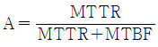
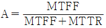
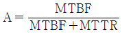
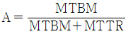
(정답률: 71%)
37. 윤활유가 갖추어야 할 성질이 아닌 것은?
- 충분한 점도를 가질 것
- 한계윤활 상태에서 견디어 낼 수 있을 것
- 화학적으로 활성이고 안정할 것
- 청정하고 균질할 것
(정답률: 76%)
38. 회전기계의 진단방법으로 가장 폭 넓 게 많이 이용되는 것은?
- 진동법
- 오일 분석법
- 응력법
- 음향법
(정답률: 82%)
39. 설비보전 조직을 구성할 때 고려할 사항이 아닌 것은?
- 제품의 특성을 고려하여야 한다.
- 설비의 특성을 고려하여야 한다.
- 설비조작 인력의 출신지를 고려하여야 한다.
- 공장의 규모와 지리적 조건을 고려하여야 한다.
(정답률: 81%)
40. 소리(음)가 서로 다른 매질을 통과할 때 구부러지는 현상은?
- 음의 반사
- 음의 간섭
- 음의 굴절
- 마시킹(Madking) 효과
(정답률: 88%)
3과목: 공업계측 및 전기전자제어
41. 용량이 같은 2[μF]의 콘덴서 2개를 직렬로 연결했을 때의 합성용량[μF]은?
- 1
- 2
- 3
- 4
(정답률: 54%)
42. 다음 중 각도 검출용 센서가 아닌 것은?
- 퍼텐쇼미터(Potentiometer)
- 싱크로(Synchro)
- 로드 셀(load cell)
- 레졸버(Resolver)
(정답률: 73%)
43. 셰이딩 코일형 전동기의 특성이 아닌 것은?
- 구조가 간단하다.
- 회전 방향을 바꿀 수 있다.
- 효율이 좋지 않다.
- 기동 토크가 매우 작다.
(정답률: 67%)
44. 브러시와 접촉하여 전기자권선에 유도되는 교류기전력을 직류로 만드는 부분은?
- 계철
- 계자
- 전기자
- 정류자
(정답률: 60%)
45. 검출 대상 물체가 검출 면 가까이 왔을 때 검출 신호를 출력하는 비접촉식 검출 스위치는?
- 플로트레스 스위치
- 근접 스위치
- 리밋 스위치
- 온도 스위치
(정답률: 77%)
46. 유체의 흐름 속에 회전자 날개를 설치하여 유량을 검출하는 유량계는?
- 초음파식 유량계
- 터빈식 유량계
- 와류식 유량계
- 용적식 유량계
(정답률: 71%)
47. 정전용량 C[F], 전위차 V[V], 저장 전기량 Q[C] 일 때 정전에너지 W[J]를 나타내는 식 중 틀린 것은?
- QV/2
- CV2/2
- Q2V/2
- Q2/2C
(정답률: 64%)
48. 운전 중 직류전동기가 과열하는 고장원인으로 거리가 먼 것은?
- 축받이 불량
- 코일의 절연증가
- 과부하
- 중성축으로부터 브러시 이탈
(정답률: 57%)
49. 어떤 금속의 전기저항이 20℃일 때 50Ω 이었다면 금속을 가열하여 30℃ 일 때의 전기저항은 몇 [Ω] 인가? (단, 이 금속의 온도계수는 0.01 이다.)
- 50
- 55
- 60
- 65
(정답률: 60%)
50. 10kW 이하의 소용량 농형 유도전동기에 정격전압을 가하면 기동전류는 정격전류의 몇 배가 흐르는가?
- 1 ~ 2배
- 3 ~ 4배
- 4 ~ 6배
- 7 ~ 10배
(정답률: 65%)
51. 다음 중에서 열전 온도계의 제작원리로서 이용되는 것은?
- 제벡 효과
- 펠티어 효과
- 톰슨 효과
- 압전기 현상
(정답률: 75%)
52. 입력신호가 서로 다른 경우에만 출력이 나타나는 조합 논리 회로는?
- NAND 회로
- EX-OR 회로
- EX-NOR 회로
- AND 회로
(정답률: 63%)
53. 측정량과 일정한 관계가 있는 몇 개의 양을 측정하고 이로부터 계산에 의하여 측정값을 유도해 내는 측정법은?
- 직접측정
- 간접측정
- 비교측정
- 절대측정
(정답률: 54%)
54. 계측기의 측정량을 증가시킬 때와 감소시킬 때 동일 측정량에 대하여 지시값이 다른 경우의 오차는?
- 비직선성 오차
- 히스테리시스 오차
- 정상상태 오차
- 동오차
(정답률: 77%)
55. 불순물이 전혀 첨가되지 않은 순수반도체로 구성된 것은?
- Ge, B
- Ge, Sb
- Si, As
- Si, Ge
(정답률: 64%)
56. 0 ~ 150V 전압계가 최대눈금의 1% 확도를 갖는다. 이 계기를 사용해서 측정한 전압이 60V 일 때 제한오차를 백분율로 계산하면 얼마인가?
- 1.0%
- 1.5%
- 2.0%
- 2.5%
(정답률: 55%)
57. 조절계에서 PID 제어와 관계없는 것은?
- 비례제어
- 적분제어
- 미분제어
- ON-OFF제어
(정답률: 76%)
58. 계측기의 조작부 구성에서 조작 신호에 따라 응답성이 좋고 큰 조작력을 가지고 있는 것은?
- 전기식
- 유압식
- 공기식
- 냉동식
(정답률: 59%)
59. 실리콘(Si) 다이오드의 순방향 전압강하는 대개 몇 [V] 정도인가?
- 0.1 ~ 0.2
- 0.3 ~ 0.4
- 0.6 ~ 0.7
- 0.9 ~ 1.0
(정답률: 66%)
60. 논리식
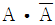
의 결과는?- 0
- 1
- A
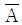
(정답률: 64%)
4과목: 기계정비 일반
61. 플렉시블 커플링을 사용하는 이유로 적합하지 않는 것은?
- 축 방향으로 인장력이 작용하는 긴 전동축에 사용할 때
- 전달토크의 변동으로 축에 충격이 가해질 때
- 고속회전으로 인한 진동을 완화시킬 때
- 두 축의 중심을 완전히 일치시키기 어려울 때
(정답률: 58%)
62. 하우징에 베어링을 설치할 때 한쪽 또는 양쪽을 좌우로 이동할 수 있게 하는 이유로 가장 적합한 것은?
- 베어링 마찰 감소
- 윤활유의 원활한 공급
- 베어링의 끼워맞춤 용이
- 열팽창에 의한 소손 방지
(정답률: 65%)
63. 측정방법 중 비교측정의 장점으로 맞는 것은?
- 측정범위가 넓다.
- 측정물의 치수를 직접 잴 수 있다.
- 길이뿐 아니라 면의 모양 측정 등 사용범위가 넓다.
- 소량 다종의 제품 측정에 적합하다.
(정답률: 61%)
64. 기어에 대한 설명 중 옳지 않은 것은?
- 표준 스퍼기어의 이 두께(circular thickness)는 원주 피치의 1/2 이다.
- 뒤틈(back lash)을 두는 이유는 원활한 윤활과 조립상의 오차 등을 고려하기 때문이다.
- 뒤틈을 너무 크게 하면 소음과 진동의 원인이 된다.
- 스퍼기어에서 원주 피치의 값이 클수록 잇수는 커지고, 이의 크기는 작아진다.
(정답률: 66%)
65. 밸브의 호칭경과 단위에 대한 설명 중 옳지 않은 것은?
- 밸브의 크기는 호칭경으로 나타내며 강과이나 이음쇠의 호칭경 치수와 일치한다.
- 호칭경을 mm로 나타낸 것을 A열, 인치(inch)단위로 나타낸 것을 B열 이라고 한다.
- 관과의 접속 끝이나 밸브시트부의 유로경을 구경이라고 한다.
- 대형, 고압, 선박용 밸브는 호칭경보다 구경을 크게 한다.
(정답률: 60%)
66. 롤러 베어링의 규격이 6200일 때 안지름은 얼마인가?
- 10mm
- 12mm
- 15mm
- 20mm
(정답률: 71%)
67. 밸브의 조립에 관한 설명으로 틀린 것은?
- 실린더 밸브 홈의 시트패킹의 오물은 청소한 후 조립한다.
- 시트 패킹을 물고 있지는 않은가 밸브를 좌우로 회전시켜 확인한다.
- 밸브 홀더 볼트는 각각 서로 다른 토크(torque)로 잠근다.
- 밸브 조립불량에 의한 고장의 이유로는 조립순서의 불량을 들 수 있다.
(정답률: 80%)
68. 기계요소에 대한 설명 중 옳지 않은 것은?
- 분할핀은 풀림방지용으로 사용한다.
- 테이퍼핀은 위치결정용으로 사용한다.
- V 벨트는 평벨트보다 전동효율이 높다.
- 크랭크 축은 연삭기 등의 주축에 사용한다.
(정답률: 54%)
69. 관속을 충만하게 흐르고 있은 액체의 속도를 급격히 변화시키면 어떤 현상이 일어나는가?
- 공동 현상
- 서징 현상
- 수격 현상
- 펌프 효율 상승 현상
(정답률: 71%)
70. 아래 그림과 같이 볼트를 체결할 때 필요한 조임 토크는 몇 kgf·m 인가?
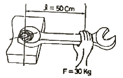
- 300
- 150
- 30
- 15
(정답률: 62%)
71. 밸브 취급방법으로 올바르지 않는 것은?
- 밸브르 열 때는 기기의 이상 유무를 확인하면서 천천히 연다.
- 밸브를 전개할 때는 완전히 연 후 1/2회전 역회전시켜 둔다.
- 이종 금속으로 된 밸브는 열팽창에 주의하여 취급한다.
- 밸브를 열고 닫을 때는 누설을 방지하기 위해 빨리 조작한다.
(정답률: 77%)
72. 송풍기의 설치장소 선정 시 고려사항으로 거리가 먼 것은?
- 급수장치
- 습도 및 부식성가스
- 보수작업에 필요한 공간
- 환기 및 소음
(정답률: 70%)
73. 원심펌프 내의 안내 깃의 역할을 설명한 것 중 가장 적합한 것은?
- 유체의 흐름을 난류로 바꾸어 준다.
- 임펠러에서 나온 물의 운동에너지 일부를 압력에너지로 바꾼다.
- 케이싱에 고정되어 강도를 증가 시켜준다.
- 케이싱에 고정되어 유체의 흐름에 역류를 방지한다.
(정답률: 54%)
74. 전동기의 고장원인과 그 대책으로 적합하지 않은 것은?
- 시동불능 : 단선 – 배선 등의 단선을 체크
- 과열 : 통풍방해 – 냉각용 송풍기 설치
- 진동, 소음 : 베어링 불량 – 베어링 교체
- 절연불량 : 코일 절연물의 열화 – 근본적인 원인의 배제
(정답률: 56%)
75. 글로브 밸브의 일종으로 L형 밸브라고도 하며 관의 접속구가 직각으로 되어 있는 밸브는?
- 버터플라이 밸브
- 체크 밸브
- 앵글 밸브
- 게이트 밸브
(정답률: 78%)
76. 변속기 중 유성 운동을 하는 원추판을 가진 변속기는?
- 가변 변속기
- 디스크 무단변속기
- 링 원추 무단변속기
- 컵 무단변속기
(정답률: 59%)
77. 배관의 누설에 대한 설명으로 옳지 않은 것은?
- 증기, 물 등의 나사부에서 누설은 관의 나사 부분을 부식시켜 강도 저하, 균열, 파단의 원인이 된다.
- 나사부의 정비 등으로 탈부착을 반복함으로써 나타난 마모는 누설과 관계가 없다.
- 배과 이음쇠 용접부의 일부에 균열이 생겨 누설이 진행되면 파단에 이르기도 하므로 조기 발견이 중요하다.
- 비틀어 넣기부 배관의 나사부에서 누설 시 그 상태로 밸브나 관을 더 조이면 반드시 반대 측의 나사부에 풀림이 생겨 누설개소가 이동한다.
(정답률: 81%)
78. 펌프를 정격유량 이하에서 운전할 때, 즉 부분유량으로 운전 시 발생되는 현상이 아닌 것은?
- 차단점 부근에서 펌프 과열현상 발생
- 임펠러에 작용하는 추력의 증가
- 고 양정 펌프는 차단점 부그에서 수온저하 발생
- 특성곡선의 변곡점 부근에서 소음 및 진동발생
(정답률: 56%)
79. 펌프의 축 추력을 제거할 수 있는 방식은?
- 양 흡입 펌프를 사용한다.
- 고 유량 펌프를 사용한다.
- 다단 펌프를 사용한다.
- 고 양정 펌프를 사용한다.
(정답률: 66%)
80. 접착제가 구비하여야 할 일반적인 조건으로 틀린 것은?
- 액체성일 것
- 고체 표면의 좁은 틈새에 잘 침투할 것
- 도포 직후 고체화하여 일정 강도를 가질 것
- 고체의 표면을 녹일 수 있는 성질이 우수할 것
(정답률: 76%)